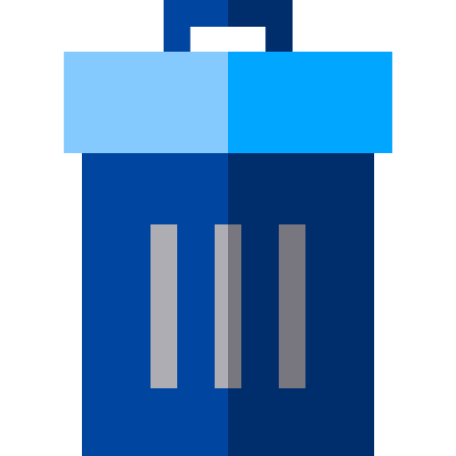

| # | Nro Identificacion | Nombres Completos | Usuario | Estado | Roles | Actualizar | Eliminar | |
|---|---|---|---|---|---|---|---|---|
| {{i+1}} | {{d.numeroIdentificacion}} | {{d.nombresCompletos | titlecase}} | {{d.email}} | {{d.usuario}} |
|
 | ||
No existe resultados | ||||||||